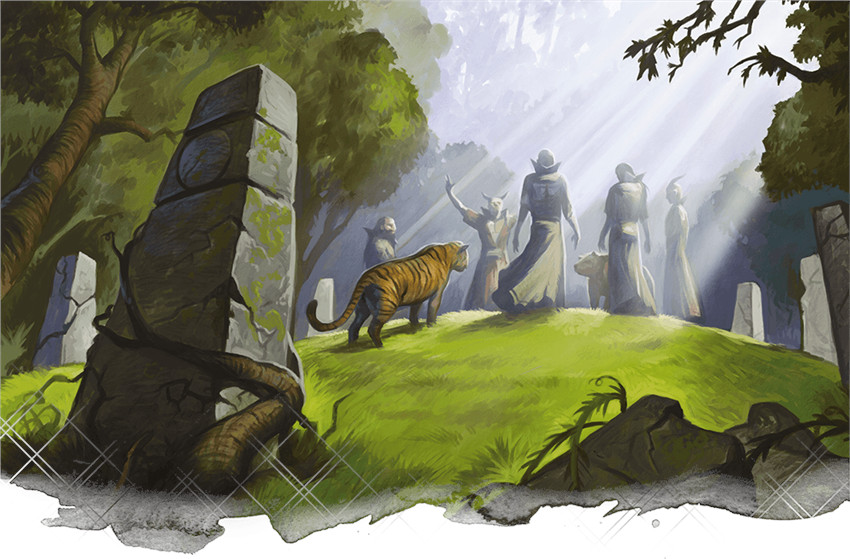

Cercle de la lune
Comme tous les druides, ceux qui se rassemblent au sein du cercle de la lune protègent la nature de ceux qui lui voudraient du mal ou l'utilisent pour blesser autrui. Ils font cela à leur manière. Ils utilisent l'art de la Forme sauvage, que tous les druides pratiquent, mais transformée en arme par ces druides qui utilisent la férocité des bêtes plutôt que le pouvoir de la magie pour défendre la nature. Affûtez vos griffes et entraînez votre rugissement ; il est temps d'en apprendre un peu plus sur le cercle de la lune.
Capacités du cercle de la lune
Le cercle de la lune puise dans les pouvoirs magiques et de transformation de la lune pour permettre aux druides d'adopter de puissantes formes. Même quand la lune se cache dans le ciel, ses pouvoirs peuvent toujours être ressentis. Le druide gagne des capacités de sous-classe aux niveaux 2, 6, 10 et 14. En résumé, ces capacités de sous-classe permettent :
- D'adopter une forme sauvage de combat permettant d'utiliser Forme sauvage plus rapidement, d'adopter des formes plus puissantes et même de vous soigner magiquement en étant sous cette forme.
- D'ignorer la résistance aux dégâts non magiques de vos ennemis lorsque vous êtes sous Forme sauvage.
- De vous transformer en élémentaire.
- D'utiliser votre maîtrise de la transformation pour changer des traits de votre forme humanoïde.
Avantages du cercle de la lune
À bas niveau, le cercle de la lune permet aux druides d'absorber un montant impressionnant de dégâts grâce à leur Forme sauvage. Un druide de niveau 2 peut se transformer en bêtes de facteur de puissance inférieur ou égal à 1, comme un ours brun ou un loup sanguinaire. Non seulement cela leur donne un pouvoir offensif incroyable, mais cette transformation leur procure aussi (globalement) 34 à 37 pv gratuits. Au niveau 2, un druide avec une Constitution de 14 (+2) a à peu près 16 pv. Une simple utilisation de Forme sauvage (et n’oubliez pas que le druide peut utiliser Forme sauvage deux fois entre deux repos courts) triple les points de vie maximums du druide.
Comme votre Forme sauvage dure au minimum 1 heure (un nombre d'heures égal à la moitié de votre niveau de druide), vous pouvez certainement rester sous Forme sauvage pour plusieurs combats, sauf si votre forme arrive à court de points de vie. Et comme vous pouvez utiliser cette capacité deux fois par repos court, la plupart des druides pourront presque tout le temps être en forme sauvage pour les combats. De plus, même si vous arrivez à cours d’utilisation de Forme sauvage, vous pouvez utiliser des emplacements de sorts pour vous soigner 1d8 pv par emplacement de sort pour que les dégâts ne vous sortent pas de votre forme de bête. Et quand bien même, si vous retrouvez votre forme humanoïde, vous avez toujours la capacité d'incantation du druide pour aider votre groupe.
Des capacités comme Frappe primitive et Forme sauvage élémentaire vous assurent que vos transformations restent pertinentes, même lorsque vos ennemis représentent un défi de plus en plus grand. Pour finir, bien que votre capacité Mille formes soit étrange et surprenante, bizarrement déconnectée des autres capacités de cette sous-classe très orientée vers le combat, c’est une aubaine dans les situations sociales.
Inconvénients du cercle de la lune
Malheureusement, l'incroyable potentiel de survie que les druides du cercle de la lune possèdent à bas niveau décroît à mesure qu’ils montent en niveau. Même s’ils restent incroyablement résistants, ils ne triplent plus leur maximum de points de vie deux fois par repos court. Des capacités extrêmement utiles comme dépenser un emplacement de sort pour des points de vie se retrouvent à avoir seulement quelques utilisations bien spécifiques. Surtout que les sorts de hauts niveaux ont tendance à être bien plus utiles que de simplement infliger ou encaisser des dégâts. Malgré la puissance additionnelle de votre Forme sauvage élémentaire, le nombre de créatures intéressantes en lesquelles vous pouvez vous transformer commence à se réduire à plus hauts niveaux, surtout si vous êtes limité aux bêtes du Monster Manual.
Rappelez-vous que vous pouvez seulement vous transformer en bêtes que vous avez vues. Le Xanathar’s Guide to Everything contient une page de suggestions utiles pour aider les MD à décider quelles bêtes le druide a pu voir au début d’une campagne et vous pouvez suivre les bêtes supplémentaires vous avez vu au cours du jeu. Vous aurez peut-être à demander à votre MD qu’il inclût des bêtes intéressantes à sa campagne pour que vous puissiez vous transformer en celles-ci.
Exemple de personnage
Si vous jouez un druide du cercle de la lune, vous devriez choisir une race qui vous donne un bonus en Sagesse comme un elfe des bois ou un nain des collines. Ces deux races ont déjà une connexion naturelle à l’environnement et fonctionnent thématiquement avec la classe, ce qui en fait un choix parfait ! De la même manière, des races avec des bonus assignables à n’importe quelle caractéristique, comme la variante de l’humain ou le demi-elfe, vous permettent aussi d’allouer vos bonus de caractéristiques comme vous le souhaitez tout en vous octroyant d’autres traits utiles comme la maîtrise de compétences supplémentaires.
Lorsque que vous êtes sous Forme sauvage, vous prenez les valeurs de Force, Dextérité et Constitution de la créature en laquelle vous vous transformez. Il peut alors être tentant de vous concentrer entièrement sur vos caractéristiques mentales et laisser votre Forme sauvage prendre le relais pour les caractéristiques physiques. C’est souvent une idée solide, surtout si vos campagnes ont souvent seulement une ou deux grosses rencontres plutôt que plusieurs petites entre les repos. Cependant, choisir une race qui améliore votre Dextérité et votre Constitution n’est pas une mauvaise chose. Il y aura des moments durant votre carrière d’aventurier où vous vous retrouverez en combat avec toutes vos utilisations de Forme sauvage épuisées et vous ne dépendrez que de votre Classe d’Armure et de vos points de vie pour survivre.
Comme d'habitude, le choix de votre historique est à votre convenance. Beaucoup de druides viennent d’un historique d’ermite ou de sauvageon et vivent relativement isolés dans des endroits sauvages du monde. Mais tous les druides ne sont pas pareils. Peut-être étiez-vous un enfant des rues fuyant Waterdeep qui a été sauvé par un maître druidique et emmené au cœur de la Haute Forêt où vous avez été formé aux arts druidiques, etc. Un personnage avec un historique étudiant les animaux, comme un artiste travaillant dans un cirque, pourrait avoir une raison intéressante d’être familier avec différents types d'animaux.
Choisir votre équipement lorsque vous créez un druide de niveau 1 sera facile car la plupart des druides n’ont pas à se soucier beaucoup de l’équipement qu’ils transportent. Heureusement, votre sélection de sorts est plus importante pour votre survie que votre équipement, donc choisissez n’importe quel outil que vous pensez utile.
Optionnel : Environnement
Si votre groupe possède le Xanathar’s Guide to Everything, le type de biome dans lequel votre druide a évolué pourrait jouer un rôle dans les choix de Forme sauvage que vous connaissez au début de la partie. Si vous ne possédez pas ce livre, discutez avec votre MD pour savoir à quelles options vous avez accès à partir du niveau 2.
Sorts
Vous ne choisissez pas votre sous-classe avant le niveau 2, mais vous pouvez jouer votre rôle au sein du groupe en sélectionnant vos sorts avant de rejoindre officiellement le cercle de la lune. Comme un clerc, vous avez toute la liste des sorts de votre classe à votre disposition lorsque vous préparez vos sorts en début de journée. Néanmoins, quand on joue un druide, on aime bien avoir une liste de sorts typique que le personnage a préparée ; cela évite d'avoir à resélectionner tous ses sorts au début de chaque journée. Comme vous allez passer la plupart de vos combats sous forme animale, au moins dans les premiers niveaux de votre carrière d’aventurier, se focaliser sur des sorts utiles en dehors du combat est un choix sûr.
En tant que druide de niveau 1, vous connaissez deux sorts mineurs et pouvez préparer un nombre de sorts de niveau 1 égal à 1 + votre modificateur de Sagesse. Il y a beaucoup de chances que votre modificateur de Sagesse soit de +2 ou de +3 dès le début. Vous pourrez donc choisir trois ou quatre sorts de niveau 1 dès que vous finirez un repos long. Même si votre Forme sauvage vous donne un gros pouvoir offensif, vous ne pourrez pas attaquer à distance sous ces formes. Vous allez donc vouloir au moins un sort mineur offensif à distance pour l’utiliser hors de votre forme animale. Flammes est un bon choix car il peut servir à la fois en tant que sort offensif et sort utilitaire. Au-delà de ça, vos sorts mineurs sont simplement une question de préférence et presque tous vous serviront bien. Druidisme est un autre bon premier choix car il vous permet d’accomplir toute sorte de tours de druide.
Vous pouvez préparer n'importe quels sorts de niveau 1 à partir de la liste de sorts de druide, mais vous pouvez utiliser la liste de sorts ci-dessous comme une base de sorts polyvalents qui vous serviront dans la plupart des cas. Quand vous aurez une idée plus précise des dangers auxquels votre personnage devra faire face au cours de l'aventure, vous pourrez personnaliser ces sorts. Essayez de choisir un sort de soutien et deux sorts utilitaires. Si vous avez une Sagesse élevée et pouvez préparer des sorts supplémentaires, choisissez les autres comme bon vous semble. Cette liste n'est toutefois là que pour vous aider à démarrer si vous jouez un druide du cercle de la terre pour la première fois. Avec l'expérience, vous pouvez bien entendu choisir d'autres sorts.
N'oubliez pas toutefois que de nombreux sorts de druide nécessitent de la concentration et que vous ne pouvez vous concentrer que sur un seul sort à la fois. Alors essayez de limiter le nombre de sorts qui demandent de la concentration à un tiers de votre liste pour une journée donnée. Pour vous aider, les sorts de la liste qui demandent de la concentration sont indiqués comme tels.
- Amitié avec les animaux (défensif / utilitaire)
- Charme-personne (social)
- Soins (soutien)
- Détection de la magie (utilitaire)
- Enchevêtrement (défensif ; concentration)
- Lueurs féeriques (soutien ; concentration)
- Nappe de brouillard (défensif ; concentration)
- Communication avec les animaux (utilitaire)
Dons
Au niveau 4, vous avez le choix entre Amélioration de caractéristiques et un don. Choisir Amélioration de caractéristiques permet d’augmenter une caractéristique de +2 (comme augmenter votre Sagesse de 16 à 18) ou augmenter deux caractéristiques de +1 (comme augmenter votre Sagesse de 15 à 16 et votre Constitution de 13 à 14). Augmenter vos caractéristiques vous rend meilleur dans un large éventail de choses. Par exemple, augmenter votre Sagesse diminue les chances que vos ennemis résistent à vos sorts, augmente vos chances de toucher avec un sort et vous rend meilleurs aux jets de Sagesse.
Les dons, d’un autre côté, vous donnent une capacité spéciale qui pourrait être plus utile dans des circonstances particulières contrairement à l’amélioration générale apportée par Amélioration de caractéristique. La Sagesse est votre caractéristique la plus importante car elle gouverne votre capacité à lancer des sorts. Lorsque vous avez atteint 20 (la valeur maximale) ou même 18 (une très bonne valeur) dans cette caractéristique, vous voudrez sûrement choisir un don. Vous pouvez choisir n’importe quel don pour appuyer votre concept de personnage, mais certains dons seront sûrement plus utiles que d’autres. Notez que tous ces donc s’appliquent aussi sous Forme sauvage. Ces dons incluent :
Explorateur de donjon. S’il vous arrive souvent de pénétrer dans des donjons, ce don peut vous sauver la vie. Les druides n’ont généralement pas accès à des capacités de classe qui les aident face aux pièges, cela peut donc vous aider à vous en sortir lorsque vous traversez des donjons sous votre forme humanoïde.
Lutteur. Certaines formes animales font un excellent usage de l’action Agripper, surtout à bas niveaux. Des bêtes avec les capacités Étreinte, comme le serpent constricteur géant, ou Engloutissement, comme le crapaud géant, veulent être capable d’agripper les créatures pour pouvoir pleinement profiter de leurs puissantes capacités.
Mobile. Être mobile sous Forme sauvage est primordial vu que vous n’avez pas la capacité de lancer des sorts qui vous permettent d’entrer et de sortir de situations dangereuses. Ce don vous fera aller loin.
Observateur. Ce don est essentiellement un demi don vu que ses effets sont mineurs, et vous gagnez aussi un bonus de +1 à la Sagesse lorsque vous le choisissez. Puisque la Sagesse est votre caractéristique principale, ce +1 peut aider. La Perception est aussi une compétence cruciale pour tout le monde.
Sentinelle. Comme vous êtes un combattant au corps à corps sous Forme sauvage, vous pouvez prendre ce don pour devenir un puissant défenseur.

Basé sur un article de James Haeck, traduit par Nathyouss